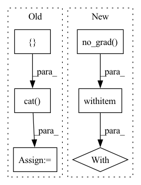

Pattern ID :16635
Before Change
neg_idxs = torch.randint(low=0, high=high, size=(bsz, self.n_negatives * tsz))
if self.sample_distance is not None and self.sample_distance < tsz:
neg_idxs += torch.cat(
[ torch.arange(start=1, end=tsz - self.sample_distance, device=neg_idxs.device, dtype=neg_idxs.dtype),
torch.arange(start=tsz - self.sample_distance, end=tsz - self.sample_distance * 2 - 1, step=-1,
device=neg_idxs.device, dtype=neg_idxs.dtype))
if not self.cross_sample_negatives:
for i in range(1, bsz):
neg_idxs[i] += i * highAfter Change
neg_idxs = torch.randint(low=0, high=high, size=(bsz, self.n_negatives * tsz))
with torch .no_grad():
if self.n_negatives > 0:
tszs = (
buffered_arange(tsz)
.unsqueeze(-1)In pattern: SUPERPATTERN
Frequency: 4
Non-data size: 6
Instances Fragment ID: 55834683
Project Name: mohammadkhalifa/fairseq-tagging
Commit Name: 3335de5f441ee1b3824e16dcd98db620e40beaba
Time: 2020-02-29
Author: alexei.b@gmail.com
File Name: fairseq/models/wav2vec.py
M Class Name: Wav2VecPredictionsModel
N Class Name: Wav2VecPredictionsModel
M Method Name: sample_negatives(2)
N Method Name: sample_negatives(2)
M Parent Class: nn.Module
N Parent Class: nn.Module
M File Name: fairseq/models/wav2vec.py
N File Name: fairseq/models/wav2vec.py
M Start Line: 385
M End Line: 404
N Start Line: 583
N End Line: 629
Before Change
vutils.save_image(tensor_to_plot, basename + "_construct.png")
self.set_input(torch.randn(1, self.embedding_dim).repeat(batch[0].shape[0], 1), batch[2], batch[1])
self.forward()
tensor_to_plot = torch.cat([ self.fake_B, self.real_A)
vutils.save_image(tensor_to_plot, basename + "_generate.png")
After Change
// net.eval()
def sample(self, batch, basename):
with torch .no_grad():
self.set_input(batch[0], batch[2], batch[1])
self.forward()
tensor_to_plot = torch.cat([self.fake_B, self.real_B], 3)
img = vutils.make_grid(tensor_to_plot) Fragment ID: 55834686
Project Name: euphoriayan/zi2zi-pytorch
Commit Name: d18cdce2416d812c3944db8aef913e06879b022b
Time: 2020-06-29
Author: ysq58000@foxmail.com
File Name: model/model.py
M Class Name: Zi2ZiModel
N Class Name: Zi2ZiModel
M Method Name: sample(3)
N Method Name: sample(3)
M Parent Class:
N Parent Class:
M File Name: model/model.py
N File Name: model/model.py
M Start Line: 204
M End Line: 212
N Start Line: 215
N End Line: 227
Before Change
apool = torch.mean(conv_features, dim = 1) // (N, block_num, embed_dim * 0.5)
mpool, _ = torch.max(conv_features, dim = 1) // (N, block_num, embed_dim * 0.5)
imgs_embed = torch.cat([ apool, mpool, dim = 2) // (N, block_num, embed_dim)
words_embed = self.__content_embed__(input_ids) // (N, seq_len, embed_dim)
indices = torch.arange(self.seq_len + self.block_num).expand(batch, -1).to(device)After Change
batch = images.shape[0] // (N)
with torch .no_grad():
batch_features = self.__clip__.encode_image(images)
//text_input = self.__get_text_input__(tag_ids)
//batch_texts = self.__clip__.encode_text(text_input) Fragment ID: 55834684
Project Name: siwooyong/codalab-microsoft-coco-image-captioning-challenge
Commit Name: d24b22ec9f0be1acd2f307be20ec85f84f8d8795
Time: 2021-07-08
Author: 68500343+yongsiwoo@users.noreply.github.com
File Name: models/base_model.py
M Class Name: decoder
N Class Name: decoder
M Method Name: forward(4)
N Method Name: forward(3)
M Parent Class: nn.Module
N Parent Class: nn.Module
M File Name: models/base_model.py
N File Name: models/base_model.py
M Start Line: 57
M End Line: 74
N Start Line: 75
N End Line: 97